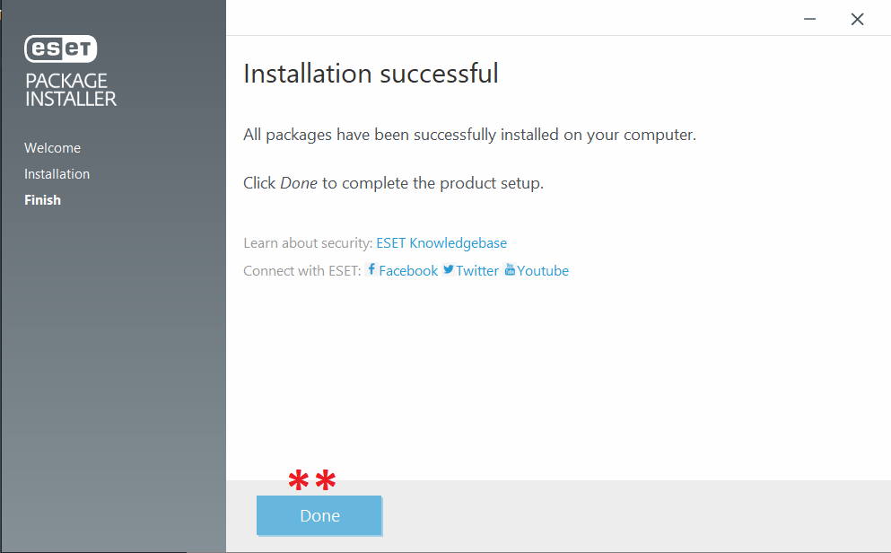

ESET || إي إس إي تي
الاسم: إي إس إي تي
المهمة: أنتي فايروس أو مضاد فايروسات لحماية البيانات من البرمجيات الخبيثة
أنظمة التشغيل المتاح عليها: ويندوز وماك
الثمن: مدفوع، يتم توفيره مجانا للعاملين في المركز السوري للإعلام وحرية التعبير
كيف يعمل؟
برنامج الـESET هو برنامج أنتي فايروس لحماية البيانات من البرمجيات الخبيثة. يقوم أيضاً بتشفير البيانات من أجل حمايتها من الاختراق ويتيح خيارات عدة لحماية بيانات المستخدم والبطاقات البنكيه والهوية.
يتكون هذا الدليل من ثلاثة أقسام رئيسية :
1- تنصيب برنامج إي إس إي تي
يقوم المركز السوري للإعلام وحرية التعبير بتوفير نسخ مجانية من البرنامج عن طريق إرسال رابط يحتوي على البرنامج، نقوم بتنزيله على جهازنا الخاص
- بعد إتمام تحميل البرنامج على جهازنا الخاص، نقوم بفتحه فتظهر النافذة التالية:
- نضغط على "Continue" لبدء عملية التنزيل
- تبدأ عملية التنصيب كما في النافذة التالية:
- بعد الانتهاء عملية تنصيب البرنامج تظهر النافذة التالية: وتعني أنه تم تنصيب البرنامج بنجاح
 - قد تظهر النافذة التالية وهي طلب لإعادة تشغيل الجهاز الخاص بنا، من الأفضل أن نقوم بهذه الخطوة

- بعد إعادة تشغيل الجهاز الخاص بنا، نقوم بالبحث عن "eset" في مكان البحث بجانب قائمة إبدأ في شريط
المهام
- نقوم بفتح برنامج "ESET Endpoint Security"
- عند فتح البرنامج تظهر النافذة التالية: وفيها معلومات عن التحديثات الخاصة بالبرنامج وتاريخ انتهاء
رخصته

- نفتح قائمة "Computer Scan" لتظهر النافذة التالية:
- "Scan your computer": لفححص جميع محتويات جهاز الكمبيوتر
- "Custom scan": لفحص أجزاء معينة في الجهاز
- "Removable media scan": إذا أردنا أن نقوم بفحص هارد أو أي جهاز خارجي، نقوم بتوصيله بالكمبيوتر ليتم تفعيل هذا الخيار ونقوم بعملية الفحص
- "Repeat last scan": لإعادة آخر عملية فحص تمت على هذا الجهاز
- عند اختيار "Custom scan" في الخطوة السابقة، تظهر النافذة التالية:
- نقوم باختيار الأجزاء أو الأقراص التي نريد فحصها
- نضغط على "Scan" لبدء عملية الفحص
- إذا كان الحساب الخاص بنا على جهاز الكمبيوتر هو حساب الأدمن فيمكننا أن نضغط على "Scan as Adminstrator"
2- لإضافة حساب على تطبيق أوثي وتفعيل التحقق بخطوتين:
-
-
نقوم بالضغط على إشارة الزائد "+" لإضافة حساب

-
-
تظهر النافذة التالية، تحتوي على حقل لإدخال رمز خاص بالحساب الذي نريد ربطه بتطبيق أوثي

-
للحصول على الرمز الخاص بحساب جوجل:
- نذهب إلى المتصفح، نضغط على الصورة أعلى يمين أو يسار المتصفح
- نضغط على إدارة حسابك أو "Manage your google account"

- تظهر الصفحة التالية:
- في القائمة الجانبية، نضغط على الأمان أو "Security"
- نبحث عن "التحقق بخطوتين" أو "Two-step authentication" ونضغط عليها

- تظهر الصفحة التالية:
- نضغط على "البدء" أو "Get started"
- تظهر الصفحة التالية:
- نقوم بإدخال كلمة السر الخاصة بحسابنا على جوجل ثم نضغط على "التالي" أو "Next"
- تظهر الصفحة التالية:
- نقوم باختيار الدولة وإدخال رقم الهاتف المحمول الذي نريد ربطه بالحساب
- نختار إرسال رسالة نصية لإرسال كود أو رمز لتأكيد أن الرقم الذي سبق إدخاله متاح
- نضغط "إرسال" أو "Send"
- تظهر الصفحة التالية:
- نقوم بإدخال الرمز الذي تم إرساله إلى الرقم في الخطوة السابقة، ثم نضغط على "التالي" أو "Next"

- تظهر الصفحة التالية:
- نضغط على "تشغيل" لتفعيل ميزة التحقق بخطوتين عن طريق رقم الهاتف

- تظهر الصفحة التالية وتعني أنه تم التفعيل:
- في نفس الصفحة السابقة ننزل لأسفل قليلا لنجد "تطبيق Authenticator" نضغط على السهم بجانبها

- تظهر الصفحة التالية:
- نضغط على "إعداد تطبيق المصادقة"

- تظهر النافذة التالية:
- نقوم بالضغط على "هل يتعذر مسح الرمز ضوئياَ؟"

- تظهر النافذة التالية:
- نقوم بنسخ الكود الظاهر في الصورة، ثم لصقه في الحقل المخصص له في تطبيق أوثي كما في الخطوة التالية
- نضغط على "التالي" أو "Next"

- نقوم بفتح نافذة تطبيق أوثي التي تركناها في الخطوة الأولى:
- ننسخ الكود الذي أخذناه من الخطوة السابقة في الحقل المخصص له
- تظهر النافذة التالية:
- نقوم باختيار اسم الحساب الذي نريد أن يظهر به
- نختار الصورة الخاصة به من القائمة
- نضعط على "Save"

- تظهر النافذة التالية:
-
يظهر لنا رمز مؤلف من 6 أرقام يتم توليده عشوائيا من جديد كل 30 ثانية:
- نقوم بنسخ الرمز ولصقه في الخطوة التالية

- نعود إلى المتصفح
- نقوم بلصق الكود في الحقل المخصص له ثم نضغط على "إثبات الصحة"

- الآن تم إضافة خطوة تسجيل ثانية لحساب الـ Gmail، لذلك عند التسجيل من جديد سوف يطلب منك كلمة السر والرمز الموجود في تطبيق أوثي، أي خطوتين للتسجيل وهو معنى "التحقق بخطوتين"